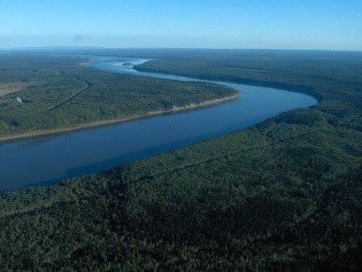

Northern Adhesions
In 1905, the government wanted to acquire the land of peoples living in the North. Railway development, and the discovery of oil in the Mackenzie River Valley in 1920, also made negotiating a treaty with northern Indigenous groups of interest to the government. Originally, the government decided that the Cree bands living at Nelson House and Split Lake would adhere to Treaty 10. Upon further reflection, government officials realized that Treaty 10 provided larger payments and reserves than earlier Numbered Treaties. It was therefore decided that acquiring the adhesion of these bands to Treaty 5 would be more beneficial for the government, regardless of any inequality to the bands involved. These bands signed the treaty, and were therefore included under Treaty 5. From there, the government expanded the Treaty 5 territory further by traveling to the mainly Cree First Nations of Oxford House, God's Lake and Island Lake. The Indigenous representatives from these communities signed the treaty in 1909. Lastly, in 1910, the Oji-Cree of Deer Lake East and the Indigenous peoples of Fort Churchill and York Factory were added, concluding the final formal stage of adhesions to the treaty and closing Treaty 5 adhesions.
Rushed Negotiations
Throughout the process of adhesions, as well as the original treaty text, negotiation of land and provisions was rushed. The parties involved were unable to clarify certain aspects and expectations for adhesions, therefore creating very ambiguous ideas of what the treaties were supposed to provide for Indigenous peoples, as some interpreted that the treaties were a share of land, rather than a ceding of it. This caused some issues for both the crown and the bands after the original negotiations, and further meetings were required even after the adhesion was signed.